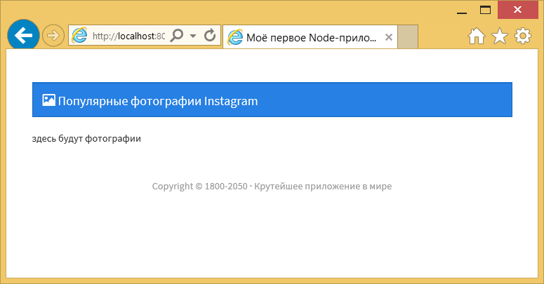

Настройка приложения
Создадим новую папку для этого приложения. Это будет хорошей практикой начать с нуля, чтобы мы могли привыкнуть к созданию Node-приложений.
package.json
После создания новой папки перепрыгивайте в командную строку и начните Node-приложение с помощью команды:
$ npm initЗаполните своей информацией по вкусу, после чего мы установим необходимые пакеты.
$ npm install express ejs instagram-node --saveБудут установлены три пакета в папку node_modules/ и добавлены в раздел зависимостей package.json.
server.js
Теперь мы начинаем работу с нашим файлом server.js. Основные вещи, которые мы должны в нём сделать:
- включить необходимые нам пакеты (Express, EJS, instagram-node);
- настроить эти пакеты;
- установить ключ Instagram API;
- установить EJS как шаблонизатор;
- установить папку ресурсов Express (для CSS);
- создать маршрут для главной страницы;
- взять популярные изображения Instagram;
- передать их в наше представление;
- запустить сервер.
// НЕОБХОДИМЫЕ ПАКЕТЫ И ПЕРЕМЕННЫЕ
// ==================================================
var express = require('express');
var app = express();
var ig = require('instagram-node').instagram();
// КОНФИГУРАЦИЯ ПРИЛОЖЕНИЯ
// ==================================================
// сообщаем Node где лежат ресурсы сайта
app.use(express.static(__dirname + '/public'));
// устанавливаем движок EJS для представления
app.set('view engine', 'ejs');
// настройка приложения instagram с помощью идентификатора клиента
// мы скоро это добавим
// УСТАНОВКА МАРШРУТОВ
// ===================================================
// главная страница — популярные изображения
app.get('/', function(req, res) {
// используем пакет instagram для получения популярных картинок
// отображаем главную страницу и выводим популярные изображения
res.render('pages/index');
});
// ЗАПУСК СЕРВЕРА
// ==================================================
app.listen(8080);
console.log('Приложение запущено! Смотрите на http://localhost:8080');Мы вставили наши пакеты, установили нужные настройки, создали маршрут для главной страницы и запустили сервер. В Node это можно сделать быстро, поскольку в нашем распоряжении возможности app.use() и app.set() для Express-приложения.
Эти настройки можно найти на страницах пакетов Express и EJS и, как правило, пакеты предоставляют очень чёткую инструкцию на страницах хранилища GitHub или npm.
Ранее мы применяли res.sendfile(), EJS же предлагает функцию res.render(). По умолчанию, Express и EJS заглядывают в папку views/, так что нам не нужно писать views/pages/index, достаточно указать pages/index.
Мы также создаём объект ig используя require('instagram-node').instagram(). Вы можете найти информацию об instagram-node на странице npm.
Файлы представления
Перед тем как мы сможем проверить сервер и убедиться что всё работает, нам для показа понадобится файл представления! Мы собираемся быстро пройтись по этим файлам, поскольку они не являются основным вниманием нашего Node-приложения.
views/partials/head.ejs
<meta charset="UTF-8">
<title>Моё первое Node-приложение!</title>
<!-- CSS -->
<link rel="stylesheet" href="//maxcdn.bootstrapcdn.com/bootswatch/3.3.2/cosmo/bootstrap.min.css">
<link rel="stylesheet" href="css/style.css">Мы вставляем Bootstrap из CDN для быстрой стилизации.
Мы выбрали один из файлов Bootstrap из раздела Bootswatch, чтобы отойти от темы Bootstrap по умолчанию.
Мы также загружаем таблицу стилей css/style.css. Она находится в нашей папке public/css/, и поскольку мы уже установили express.static() в server.js, наше приложение будет получать ресурсы из папки public/.
views/partials/header.ejs
<nav class="navbar navbar-inverse">
<div class="container-fluid">
<div class="navbar-header">
<a href="/" class="navbar-brand">
<span class="glyphicon glyphicon-picture"></span>
Популярные фотографии Instagram
</a>
</div>
</div>
</nav>Ничего сумасшедшего здесь нет. Просто navbar из Bootstrap с обратной ссылкой на главную страницу. <span> является одной из иконок Bootstrap.
views/partials/footer.ejs
<p class="text-center text-muted">
Copyright © 1800-2050 · Крутейшее приложение в мире
</p>Старый добрый копирайт всего пути c 1800 года в будущее!
views/pages/index.ejs
<!DOCTYPE html>
<html lang="ru">
<head>
<% include ../partials/head %>
</head>
<body class="container">
<header>
<% include ../partials/header %>
</header>
<main>
здесь будут фотографии
</main>
<footer>
<% include ../partials/footer %>
</footer>
</body>
</html>Мы используем include чтобы вставить разные части. Это помогает нашему приложению взять EJS-файлы. В EJS теги <% и %> будут отображать информацию.
public/css/style.css
body {
padding-top:50px;
}
footer {
padding:50px;
}Это всё, что мы добавим для стилизации прямо сейчас. Стилизацию изображений мы сделаем после их получения в нашем приложении.
Со всем этим давайте запустим наш сервер и посмотрим на то, что мы создали в браузере:
$ nodemon server.jsМы можем увидеть сайт в браузере по адресу http://localhost:8080.

Дальше мы будем использовать пакет instagram-node для получения популярных фотографий и демонстрации их в нашем приложении.

Все материалы сайта доступны по лицензии Creative Commons «Attribution-NonCommercial» («Атрибуция — Некоммерческое использование») 4.0 Всемирная, если не указано иное.